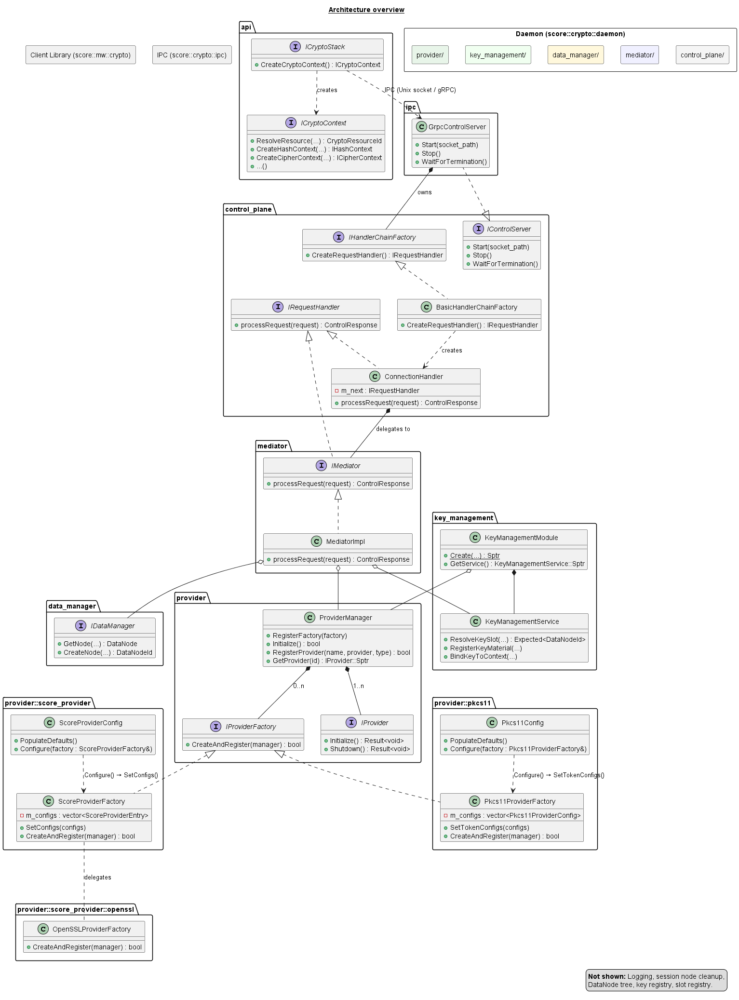

Component Architecture#
Crypto Architecture
|
status: draft
security: NO
safety: QM
|
||||
Component Request Dummy
|
status: draft
|
||||
Overview#
The score::mw::crypto module provides a provider-agnostic C++ (>=17) middleware
interface for cryptographic operations, key management, certificate lifecycle, and
shared memory allocation. It follows a client-daemon architecture where the
client library communicates with a daemon process over IPC.
The API is organized around a single runtime handle type —
CryptoResourceId — that encapsulates a daemon-assigned 64-bit identifier,
resource type, persistence semantics, and owning provider index. Applications
resolve human-readable string identifiers to CryptoResourceId handles once,
then use these compact numeric handles for all subsequent operations.
Key design principles:
Provider-agnostic: Operations work identically across hardware (HSM, TEE) and software (OpenSSL, SoftHSM) providers
PQC-ready:
AlgorithmIduses strings for extensibility, supporting ML-KEM, ML-DSA, SLH-DSA, XMSS, LMS, and SHAKE algorithmsEphemeral-by-default keys: All key generation produces ephemeral keys; explicit
PersistKey()promotes to persistent storageZero-copy data plane: Provider-compatible shared memory enables zero-copy from application through daemon to crypto device
Backward-compatible extensibility: All configs use default constructors with fluent builders; new optional fields never break existing callers
Requirements Linked to Component Architecture#
No needs passed the filters
Architecture Details
- API Architecture
- API Description
- Resource ID Model
- Resource Lifecycle and CryptoResourceGuard
- Memory and Data Plane Model
- Zero-Copy Path
- Base Class Hierarchy
- Device Binding
- Access Control
- Key Operation Permission Model
- Configuration Model
- Config Extensibility Contract
- Provider Auto-Resolution
- Certificate Lifecycle
- IPC Transport
- Operation Timeout and Deadline
- Rationale Behind Architecture Decomposition
- API Dynamic Architecture
- Typical Usage Flow
- Pre-Deployed Key Flow (Slot-Direct Path)
- Pre-Deployed Key Flow (Guard Path — Multi-Context Reuse)
- Ephemeral Key Generation and Use
- Hashing Example
- Context Reuse via Reset()
- Signing with PQC Algorithm
- Certificate Verification
- Key Operation Permissions
- Operation Timeout Configuration
- Interfaces
- Provider Architecture
- Key Management Architecture
- Design Decisions
- ABI Compatibility for IPC Layer (Deferred Post-Stabilisation)
- CryptoResourceGuard Lifetime via Daemon-Side Reference Counting
- Shared-Connection Anchor for Persistent Resource ID Stability
AlgorithmIdasFixedCapacityString<64>- Synchronous-Only IPC Model
- Context
Reset()for Streaming Context Reuse - Two-Layer Per-Call Timeout with Daemon-Side Enforcement
KeyOperationPermissionas a Capability Bitmask- Unified Cipher Context (No Encrypt/Decrypt or Symmetric/Asymmetric Split)
IMemoryAllocatorSeparated fromICryptoStack- Control Plane IPC Boundary Copy with Daemon-Internal Zero-Copy References
- Per-Operation Parameter Structs with Dual Overloads
Static Architecture#
The components are designed to cover the expectations from the feature architecture (i.e. if already exists a definition it should be taken over and enriched).
Crypto
|
status: invalid
security: YES
safety: QM
|
||||
{kind=link}

Provider Layer#
The provider layer decouples the daemon from concrete cryptographic library implementations through two complementary abstractions:
IProviderThe single entry-point into one cryptographic back-end (e.g. OpenSSL, a PKCS#11 token). Exposes
GetCryptoHandlerFactory(),GetKeyFactory(), andGetKeySlotHandler(). Lifecycle is managed byProviderManager.IProviderFactoryA pure-virtual factory interface with a single method
bool CreateAndRegister(ProviderManager&). Concrete implementations encapsulate the construction and registration of one or more relatedIProviderinstances. Factories are registered externally (daemon bootstrapper) viaProviderManager::RegisterFactory()and called in registration order duringProviderManager::Initialize().ScoreProviderFactoryTop-level factory for the score interface family. Accepts a vector of
ScoreProviderEntryconfigs (default: single OpenSSL entry).CreateAndRegister()iterates configs and delegates to the appropriate internal factory (e.g.OpenSSLProviderFactory).OpenSSLProviderFactoryInternal factory used by
ScoreProviderFactory. Constructsscore::openssl::OpenSSLand registers it asCryptoProviderType::SOFTWAREunder thecommon::kProviderNameOpenSSLname. No per-instance configuration required.Pkcs11ProviderFactoryAccepts an injected
std::vector<Pkcs11ProviderConfig>viaSetTokenConfigs()(the acceptor side of the visitor pattern) or through its explicit vector constructor. The daemon bootstrapper does not build configs directly; it delegates toPkcs11Config::Configure():config.GetPkcs11Config().PopulateDefaults(); auto factory = std::make_unique<Pkcs11ProviderFactory>(); config.GetPkcs11Config().Configure(*factory); manager.RegisterFactory(std::move(factory));
CreateAndRegistercreates a single sharedPkcs11Module(soC_Initializeis invoked exactly once regardless of token count), then constructs and registers onePkcs11Providerper entry asCryptoProviderType::HARDWARE.Visitor pattern —
Pkcs11Config::Configure()is the visitor: it iterates thePkcs11TokenEntrylist, converts each entry to aPkcs11ProviderConfig(filling labels, PIN, cleanup strategy), and callsfactory.SetTokenConfigs(). This keeps thePkcs11TokenEntry → Pkcs11ProviderConfigconversion entirely within the PKCS#11 subsystem (score/crypto/daemon/provider/pkcs11/pkcs11_token_config.*).Multi-token coexistence: multiple
Pkcs11TokenEntryentries inPkcs11Configproduce onePkcs11Providerper token. All providers from the same factory share a singlePkcs11Module(C_Initialize/C_Finalizeis called once), but each provider maintains its own session pools,TokenAuthGuard, andPkcs11KeyStore. Login state and key registrations are fully isolated. This design supports scenarios such as separate SoftHSM slots for different trust domains within the same process.For session lifecycle details see PKCS#11 Session Management in the key management details.
ProviderManagerAggregates all registered providers and routes requests by
ProviderIdorCryptoProviderType. After all factories have been called,Initialize()applies the daemon configuration and callsInitialize()on every provider.
Dynamic Architecture#
The typical interaction sequence between Application, Client Library, and Crypto Daemon:
See API Dynamic Architecture for detailed usage flows including pre-deployed key paths, ephemeral key generation, context reuse, PQC signing, certificate verification, and timeout configuration.
Interfaces#
See Interfaces for the full interface descriptions.
Design Decisions#
See Design Decisions for the full design decision records.